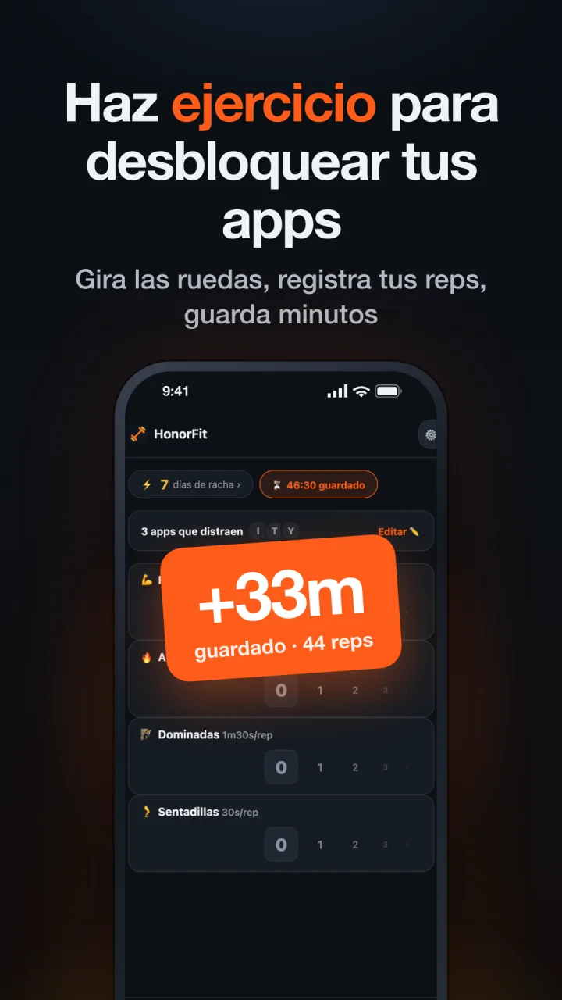

Un bloqueador de TikTok que te hace hacer flexiones primero
Todas las apps de tu celular quieren tu atención, pero TikTok es la app de la que la gente dice: “levanté la vista y ya había pasado una hora”. Casi nadie dice eso del correo. Pasa por cómo está diseñada la app, así que una solución de fuerza de voluntad no aguanta. Una solución de precio, sí.
Por qué el tiempo en TikTok desaparece
- No hay nada que terminar. Un video de YouTube se acaba y un hilo de Reddit se queda sin comentarios. El feed Para ti nunca se acaba, así que nunca llegas a un punto donde se sienta natural parar.
- Cada video es corto, pero la sesión no. Quince segundos no se sienten como nada, así que nunca sientes que estás decidiendo pasar una hora. Ochenta videos después, ya la pasaste.
- Aprende rápido. El feed se ajusta a lo que te detienes a ver, muchas veces en la misma sesión. Entre más te quedas, mejor se vuelve para retenerte.
- No tienes que hacer nada para seguir. El siguiente video simplemente empieza. Parar es lo único que tienes que hacer de forma activa.
Junta todo eso y pierdes la noción del tiempo. TikTok tiene su propio límite de tiempo de pantalla, pero lo protege un código que tú mismo pones. Cuando vas treinta videos adentro, simplemente lo escribes.
Dos cosas que de verdad ayudan
Un precio para entrar. Unas sentadillas o flexiones antes de que se abra la app rompen el reflejo. Agarras el celular y ves una pantalla de bloqueo en lugar del feed, y ese es el momento en que decides si de verdad lo quieres.
Un reloj que puedas ver. Esto importa más con TikTok que con cualquier otra app. Tu saldo ganado baja mientras TikTok está en pantalla y se pausa cuando sales. En iPhone, HonorFit te muestra el tiempo que te queda como una notificación discreta. En Android, está en la barra de notificaciones. Desliza hacia abajo y vas a ver exactamente cuántos minutos te quedan, que es justo la señal para parar que la app no te da. Cuando llega a cero, TikTok se vuelve a bloquear a media reproducción.

Bloquea TikTok en iPhone
- En HonorFit, toca Continuar para darle acceso a Tiempo de uso y apruébalo. Es el permiso de Tiempo de uso de Apple (Family Controls), el mismo que necesita cualquier bloqueador de apps en iPhone.
- Toca Apps a bloquear › Abrir selector de apps y busca TikTok. Apple acomoda las apps por categorías, así que la búsqueda del selector es la forma más rápida de encontrarla.
- Marca TikTok y cierra el selector. A partir de ahora, abrir TikTok muestra “TikTok está bloqueada 🔒” hasta que te hayas ganado tiempo.
El iPhone solo deja que la pantalla de bloqueo de Apple abra la app a la que pertenece, así que no te puede mandar directo a HonorFit. En su lugar, HonorFit manda una notificación cuando aparece la pantalla de bloqueo. Tócala para ir a las ruedas de repeticiones.
Bloquea TikTok en Android
- En la tarjeta Permisos necesarios de HonorFit, permite el Acceso a datos de uso y Mostrar sobre otras apps. Pon también el uso de batería en Sin restricciones en Ajustes › Funcionamiento en segundo plano, o algunos celulares van a detener el bloqueador sin avisar.
- Abre Apps a bloquear y busca “TikTok”, o encuéntrala entre las que usaste en las últimas 24 horas. Si también tienes TikTok Lite, márcala también.
- Cuando tu saldo está vacío, TikTok se abre detrás de un bloqueo de pantalla completa con dos botones: Ganar más tiempo 💪 y “Mejor no, voy a resistir 🧘”. Puse el segundo botón porque muchas veces esa es la respuesta.
Un tipo de cambio para TikTok
TikTok quema el tiempo más rápido que las apps de mensajes, así que yo haría que sus minutos costaran un poco más. Los valores por defecto de HonorFit ya te dan las opciones:
- Las sentadillas dan 30 segundos cada una. 20 sentadillas compran 10 minutos. Las puedes hacer donde sea, incluso en un cuarto chico donde no caben las flexiones.
- Las flexiones dan un minuto cada una. 10 flexiones compran 10 minutos, si prefieres trabajar la parte de arriba.
- Gánatelo en series cortas. La versión gratis guarda hasta 2 horas, pero diez minutos a la vez es el punto ideal. Limita cuánto TikTok puedes precargar, que es justo la idea.
Si diez minutos igual terminan siendo cuarenta, hay dos opciones gratis. Puedes cambiar lo que te da cada repetición, o activar el modo difícil desde la pantalla de inicio, que reduce a la mitad cada repetición. (Tócalo otra vez para el modo enfermo, que duplica cada repetición para los días en que te sientes mal.) Yo probaría los valores por defecto una semana antes de cambiar nada. A la mayoría de la gente los primeros días son los más difíciles.
Lo que esto no arregla
Si no puedes abrir la app, quizá abras tiktok.com en el navegador. HonorFit bloquea apps, no sitios web. Si eso se vuelve tu atajo, usa los límites de sitios web que ya trae tu celular.
Y como HonorFit funciona con el sistema de honor, puedes escribir repeticiones que no hiciste. No hay ninguna cámara mirándote, a propósito. Si te descubres haciéndolo todos los días, probablemente el tipo de cambio es demasiado duro. Aflójalo un poco en lugar de rendirte con la app.
HonorFit Blocker pone TikTok detrás de unas sentadillas o flexiones y te muestra tu tiempo bajando mientras ves. Gratis en iPhone y Android. Sin cámara, sin IA, sin cuenta.